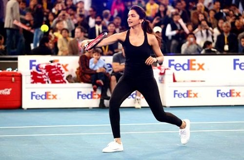
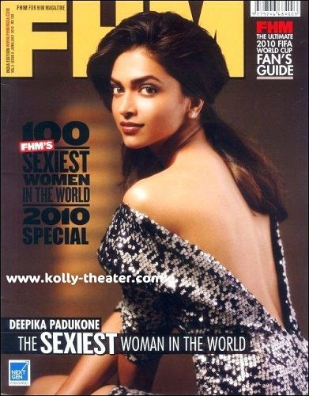

Deepika Padukone is a popular Indian film actress who gained popularity with films like “Om Shanti Om” (2007) and “Bajirao Mastani” (2015).
Contents
Biography/Wiki
Deepika was born on 5 January 1986 (age 36 years; as of 2022) in Copenhagen, Denmark, and brought up in Bengaluru, Karnataka, India. She took a lot of interest in playing badminton since childhood and wanted to become a badminton player just like her father. She played badminton in many national level championships during her school days. She also worked as a child model and appeared in several advertising campaigns when she was only eight. She later changed her mind, and instead of becoming a badminton player, she decided to become a fashion model.
Physical Appearance
Height (approx.):Â 5â 8â
Weight (approx.):Â 55 kg
Figure Measurements (approx.):Â 34-26-34
Hair Colour:Â Brown
Eye Colour:Â Black
Family & CasteÂ
She belongs to a middle-class Brahmin (Chitrapur Saraswat) Family.
Parents & Siblings
Her father Prakash Padukone is a former badminton player and also the first Indian badminton player who won the All England Championship. Her mother Ujjala Padukone is a travel agent. She has a sister Anisha Padukone, who is a golfer.
HusbandÂ
On 14-15 November 2018, Deepika Padukone and Ranveer Singh tied the knot near Lake Como in Italy.
Deepika Padukone and Ranveer Singh marriage as per Sindhi tradition

Deepika Padukone and Ranveer Singh marriage as per Konkani tradition
Relationships/Affairs
Before entering the Bollywood film industry, she was in a live-in relationship with the model Nihaar Pandya.
She was also in a relationship with actor Ranbir Kapoor and even sported a tattoo of his initials on the nape of her neck, but the relationship ended up a year later.
She was dating the Siddharth Mallya, but again the relationship ended up within a few years.
Deepika was also reported to be dating actor-Upen Patel and model-Muzammil Ibrahim.
She was also reported to be going out with cricketer-Yuvraj Singh.
Deepika Padukone dated Ranveer Singh before getting married to him in 2018. In an episode of ‘Koffee With Karan’ (Season 8), Deepika opened up about their relationship and revealed that during their dating phase, there was no formal commitment between them. She explained that after a previous failed relationship, she was not prepared to commit, so they had a more flexible arrangement. She mentioned that they were allowed to see other people, but they kept coming back to each other. [1]Hindustan Times Deepika said,
There was no ‘commitment’ as such. Even if we were technically allowed to see other people, we would just keep coming back to each other.”
While Deepika’s revelation on the talk show received support from many, it also led to some online trolling and the creation of various memes. In response to such trolling, many personalities including Karan Johar and Supriya Shrinate expressed their support for Deepika.
What have we become?
A couple sits together on a talk show and talks about their relationship, their marriage, their courtship.
A young woman, who is a super achiever talks about her struggles with mental health – she actually emboldens many more to deal with this unspoken⦠pic.twitter.com/chn0dFTxDG
— Supriya Shrinate (@SupriyaShrinate) October 30, 2023
Career
She did her schooling from Sophia High School, Bengaluru, and later attended Mount Carmel College, Bengaluru for her pre-university education. She then enrolled in Indira Gandhi National Open University, New Delhi for a Bachelor of Arts (B.A.) Degree in Sociology but quit soon due to scheduling conflicts with her modelling career.
In 2004, she started working as a model under the guidance of fashion guru Prasad Bidapa. In 2005, she walked the ramp for designer Suneet Varma at the Lakme Fashion Week. She made her first appearance on the ramp when she was 17 years old.

Deepika Padukone during modelling days
She gained recognition after featuring in the commercial for Liril soap. In 2006, she appeared in a popular print campaign for Kingfisher Calendar that made her gain a lot of fame.
She later shifted to Mumbai and stayed at her aunt’s home. She appeared in the music video “Naam Hai Tera,” sung by Himesh Reshammiya. After that, she received many offers for film roles. As she had no experience in acting, she started learning acting at Anupam Kherâs acting institute- Actor Prepares.
In 2006, she made her acting debut with the Kannada film “Aishwarya,” in which she played the lead role.
Deepika was supposed to make her Bollywood debut with Sanjay Leela Bhansali’s “Saawariya.” However, Due to some unknown reasons, the role went to Sonam Kapoor; who marked her debut the movie. In 2007, she got a chance to play the lead role in Farah Khan‘s super hit Bollywood film- “Om Shanti Om.” Farah signed Deepika for “Happy New Year;” however, the film was cancelled, and later, released in 2014. Reportedly, it was Ankita Lokhande who was the first choice for the role of Mohani in Happy New Year (2014). [2]Koimoi

In 2017, she made her debut in Hollywood with the film “XXX: Return of Xander Cage.”
In 2023, Deepika made a cameo appearance as Aishwarya Rathore in the film ‘Jawan.’ In an interview, she revealed that she did not charge a penny for this role. Deepika added that she would like to do special appearance roles in almost every film starring Shah Rukh Khan. [3]The Week

Deepika Padukone as Aishwarya Rathore in the film ‘Jawan’ (2023)
Awards
- Filmfare Award for Best Female Debut for “Om Shanti Om” (2008)
- International Indian Film Academy (IIFA) Award for Best Female Debut for “Om Shanti Om” (2008)
- Filmfare Award for Best Actress Award for “Goliyon Ki Raasleela: Ram-Leela” (2014)
- International Indian Film Academy (IIFA) Award for Best Actress Award for “Chennai Express” (2014)
- Filmfare Award for Best Actress Award for “Piku” (2016)
- International Indian Film Academy (IIFA) Award for Best Actress Award for “Piku” (2016)
- TIME100 Impact Award on 28 March 2022
Controversies
- On 14 September 2014, the Times of India tweeted about Deepika Padukone’s cleavage show to which the actress got infuriated. In response, she wrote:Â “Yes I am a woman. I have breasts. I have cleavage. You got a problem?.” She got support from all her fans and even the members of the glamour world. However, the Times of India’s tweet was removed.
- On Karan Johar’s talk show, she said that Ranbir Kapoor should start endorsing a condom brand.
- Another controversy erupted when the Sikh Code of Conduct was violated on the occasion of her marriage ceremony in Italy.
- On 7 January 2020, her visit to the JNU campus to show her support and condemn the brutal attack on JNU students that happened on 5 January 2020, attracted controversy. She was in town for the promotion of her movie Chhapaak and visited the protesting students at Jawaharlal Nehru University to express her solidarity against the JNU attack. She said,
I feel angry that this is happening. At the same time, it is a matter of concern that action is not being taken.”
Social media was abuzz with negative as well as positive comments from netizens with the hashtags âboycottchhapaakâ and ‘IStandwithDeepikaâ trending simultaneously on Twitter. [4]Business Line
- Amid the investigations of drug abuse in Bollywood by the Narcotics Control Bureau (NCB) in the wake of Sushant Singh Rajput‘s death, Deepika Padukone’s name also surfaced on 21 September 2020. According to some news channels, Deepika’s name appeared in WhatsApp chats from October 2017 between Sushantâs former manager Jaya Saha, a âK,â and a âD;â discussing drug supplies. [5]Hindustan Times Later, Kangana Ranaut took potshots at Deepika Padukone on Twitter and ridiculed Deepikaâs depression awareness campaign, hinting it was a consequence of âdrug abuse.’
Repeat after me, depression is a consequence of drug abuse. So called high society rich star children who claim to be classy and have a good upbringing ask their manager ,â MAAL HAI KYA?â #boycottBollywoodDruggies #DeepikaPadukone https://t.co/o9OZ7dUsfG
— Kangana Ranaut (@KanganaTeam) September 21, 2020
Tattoos
Car Collection
Deepika owns an Audi Q7, Audi A8, Mini Cooper, and BMW 5-Series.
Assets/Properties
- In September 2021, she bought a luxury property in Mumbaiâs Alibaugh along with her husband, Ranveer Singh. [6]Women’s era
- In December 2022, Ranveer and Deepika purchased a house at a whooping price of Rs 119 crores near Salman Khanâs Galaxy Apartments and Shah Rukh Khanâs Mannat bungalow; it was the first house they bought together after their marriage. [7]Zee News
Salary & Net Worth
Deepika Padukone charges approximately â¹14 crore/film. In 2018, her income was estimated to be â¹112.8 crore/annum and her net worth was nearly $20 Million.
Favourites
- Food:Â Ravioli Bolognese, Pasta, Dal-Chawal, Biryani, Maharashtrian Varan, South Indian Food, Mediterranean Food, Dim Sum, Spaghetti, Pasta, Chocolates
- Actor(s): Aamir Khan, Amitabh Bachchan, Shah Rukh Khan, Brad Pitt, Richard Gere
- Actresses: Hema Malini, Sridevi, Madhuri Dixit, Kajol
- Film(s): Dilwale Dulhania Le Jayenge, Vicky Cristina Barcelona, The Color of Paradise, Cinderella Man
- Singer(s): A.R. Rahman, Rihanna, Jennifer Lopez, Justin Bieber
- Colour(s):Â White, Mauve
- Fashion Designer(s): Anju Modi, Tarun Tahiliani, Manish Malhotra, Rohit Bal
- Fashion Brand:Â Zara
- Destination(s):Â France, Maldives
- Sports: Badminton, Football, Polo
- Restaurants: Mumbai- Olive, Ram and Shyam, Bengaluru- Sunny’s, London- Ping Pong, Scalini, Toronto- Soho House, South Africa- Mabula
Facts
- Before she entered the field of modelling, she was a national level badminton player and also a state-level baseball player.

Deepika Padukone national level badminton player
- In 2005, she won the Model of the Year award at the Kingfisher Fashion Awards.
- She is non-vegetarian.
- Her hobbies include dancing, reading, playing badminton, and cooking.
- Deepika likes eating South Indian snacks, wearing Indian clothes like sarees, choodidaars, putting on mascara, and gym wear. She dislikes wearing designer clothes and negativity.
- Salman Khan was the first person who spotted the potential in Deepika Padukone and offered her a film, but at that time she wasn’t prepared for it; as she had just started her modelling career by then.
- She learned dancing from Shiamak Davar‘s dance academy.
- She learned a Japanese martial art form Jujutsu for the Bollywood film Chandni Chowk to China (2009) and performed her stunts herself.
- She is the first Bollywood actress who delivered four consecutive hit films.
- She calls choreographer Farah Khan her second mother.
- She has endorsed several brands and products like L’Oréal Paris, Tissot, Nescafe, Sony Cyber-shot, Myntra, Maybelline, Coca-Cola, Vogue eyewear, etc.
- She worked as a freelance writer for HT City in 2009.
- If reports are to be believed, she was offered a role in the Hollywood film “Furious 7.” Deepika rejected the offer due to some prior engagements.
- She is associated with an initiative of her father, Olympic Gold Quest (OGQ); a non-profit company that helps Indian athletes to win Olympic Gold medals.
- In 2010, she adopted the Ambegaon village of Maharashtra as a part of the Greenathon campaign to tackle the problem of electricity.

- She was named Indiaâs Most Beautiful Women by the Indian edition of People Magazine in 2012.

- She was also named the Sexiest Woman in the World by the Indian edition of FHM in 2010 & 2014.

Deepika Padukone Sexiest Woman in the World 2010
- In 2013, she launched her clothing brand All About You.
- In 2015, she formed a foundation The Live Love Laugh Foundation to create awareness of mental health in India.
- She is the brand ambassador of the NGOÂ Indian Psychiatric Society (IPS).
- In 2016, she was chosen the Sexiest Asian Woman by the UK magazine Eastern Eye.
- She was quoted as the ultimate role model for a healthy, fit, and active lifestyle in the fitness book fitness book-The Four-Week Countdown Diet by Namita Jain.
- She owns a flat in Beaumonde Towers, Prabhadevi, Mumbai. According to reports, her ex-boyfriend Siddharth Mallya bought it as a gift for her.
- Deepika often completes her tasks systematically and has a habit of listing everything down.
- In 2017, she became the highest-paid Indian actress.
- Deepika got engaged to Ranveer around 4 years before they got married in November 2018.
- During her school days, she used to be very talkative; the fact was testified by herself, when she shared a photo of her teacher’s remarks on her Instagram in October 2019.
- Deepika is often spotted enjoying alcoholic beverages.

- In May 2022, Louis Vuitton signed her as a âHouse Ambassador;â making her the first Indian to be signed on as a âHouse Ambassadorâ by Louis Vuitton. On 13 May 2022, she appeared at Louis Vuitton 2023 Cruise Show in San Diego, California. [8]Hindustan Times
- In May 2023, Time magazine featured Deepika Padukone on its cover, describing her as a âglobal starâ bringing âthe world to Bollywoodâ.
References


{kind=link}
{kind=link}
{kind=link}
{kind=link}
{kind=link}
{kind=link}
{kind=link}
{kind=link}
{kind=link}
{kind=link}
{kind=link}
{kind=link}
{kind=link}
{kind=link}
{kind=link}
{kind=link}
{kind=link}
{kind=link}
{kind=link}
{kind=link}
{kind=link}
{kind=link}
good Information About Deepika Padukon
I love DEEPIKA PADUKONE.
?â¤â¤â¤?
I am her biggest fan.
And also of SHAHRUKH KHAN.
I’m also from karnataka, Hassan District. Now living at Bangalore. I’m biggest fan of Deepika Padukone. She is very good actor.
She is being married to Ranveer Singh in Italy on 13.11.2018.
God bless you Deepika and Ranveer
Deepika I’m ur biggest fannnnnn
I am a very big friend of Deepika mam & Ranveer singh sir. Love a lot’s from Uttarakhand.
Hi deepveer u people invite us for ur movies always to come and watch our movies,but u people didn’t invited us to ur wedding and u people didn’t posted ur wedding pics also very bad very very bad……
Carefully observe the winners, don’t always pay attention to the losers
She claimed in desi boys that she is 5.7 Tall
So lovely I wish you more success ahead. Long live,happiness and progress, above all good end.
THE ICON OF LOVE! TORCH OF ETERNAL PASSION! DEEPIKA with RANVEER!